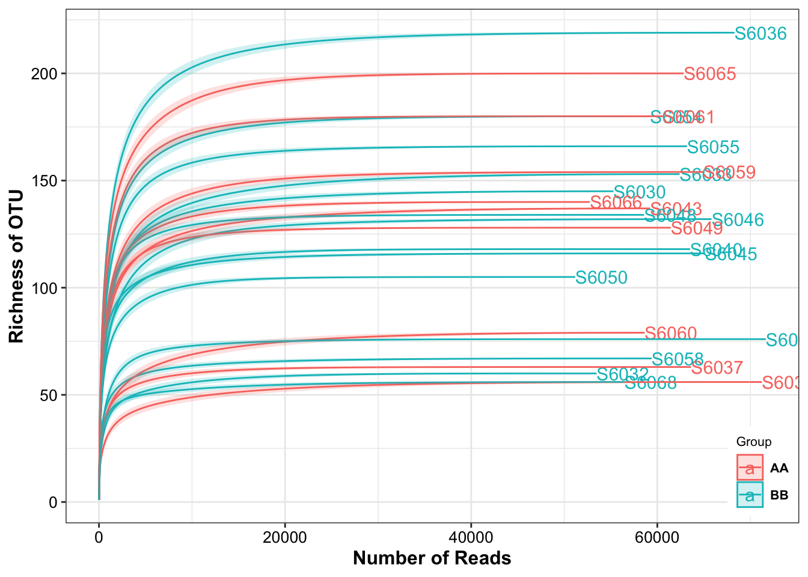
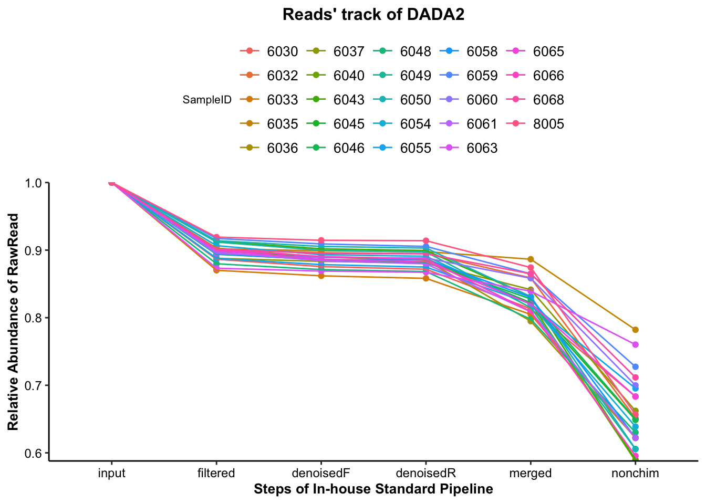
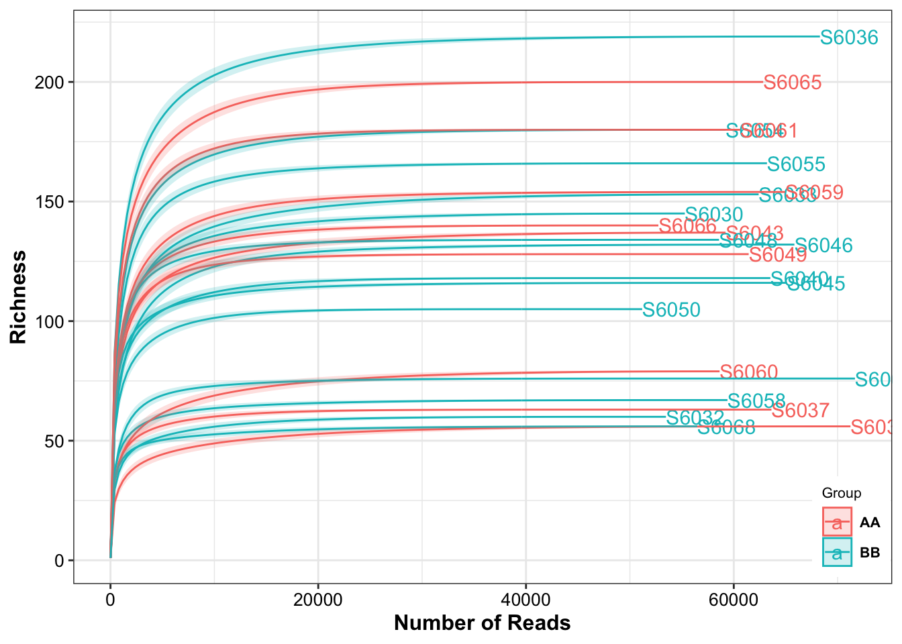

Chapter 5 Quality Evaluation
Quality control of DADA2 results will help us have more rational determinations on the further data analysis. Firstly, the reads’ track of DADA2 could show us the Changed Ratio of reads through the in-house standard amplicon sequencing data upstream pipeline. Then, the Evaluation of the spike-in samples from the Reference Matrix will reflect the quality of sequencing data. Finally, we recommend you that utilizing the rarefaction curves to assess the sequence depth per sample and choose the rational cutoff of OTU Number to do rarefy.
Loading packages
library(XMAS2)
library(dplyr)
library(tibble)
library(phyloseq)
library(ggplot2)
library(ggpubr)
library(SummarizedExperiment)5.1 Reads’ track
- this procedure only perform in 16s data
plot_Dada2Track(data = dada2_res$reads_track)
Figure 5.1: Reads’ track of DADA2
5.2 Spike-in (BRS) sample assessment
The spike-in sample is use to evaluate the consistent quality on bacteria when we have multiple sequence batches data. We devised an evaluation system containing the Correlation Coefficient, Bray Curtis Distance and Impurity Level to assess the sequencing data quality.
Please use the default Reference and Save directory to obtain and save the spike-in sample matrix when you run run_RefCheck.
5.2.1 16s data
The taxonomic levels of spike-in sample’s bacteria is genus. Firstly, using the summarize_taxa to get the genus level phyloseq object and get the BRS_ID.
dada2_ps_genus <- summarize_taxa(ps = dada2_ps,
taxa_level = "Genus")
dada2_ps_genus@sam_data## Group
## S6030 BB
## S6032 BB
## S6033 BB
## S6035 AA
## S6036 BB
## S6037 AA
## S6040 BB
## S6043 AA
## S6045 BB
## S6046 BB
## S6048 BB
## S6049 AA
## S6050 BB
## S6054 BB
## S6055 BB
## S6058 BB
## S6059 AA
## S6060 AA
## S6061 AA
## S6063 BB
## S6065 AA
## S6066 AA
## S6068 BB
## S8005 QCdo run_RefCheck under the optimal parameters.
BRS_ID: the ID of BRS sample;
Reference: the directory of the latest spike-in sample matrix (default: /share/projects/Analytics/analytics/XMAS/RefCheck/);
Save: the directory to save the latest spike-in sample matrix (default: /share/projects/Analytics/analytics/XMAS/RefCheck/).
To see more details to use ?run_RefCheck.
run_RefCheck(
ps = dada2_ps_genus,
BRS_ID = "S8005",
Ref_type = "16s")## Noting: the Reference Matrix is for 16s
## S8005 is in the Reference Matrix's samples and remove it to run
##
## ############Matched baterica of the BRS sample#############
## The number of BRS' bacteria matched the Reference Matrix is [15]
## g__Bifidobacterium
## g__Bacteroides
## g__Faecalibacterium
## g__Lactobacillus
## g__Parabacteroides
## g__Collinsella
## g__Coprococcus_3
## g__Dorea
## g__Streptococcus
## g__Roseburia
## g__Anaerostipes
## g__Escherichia_Shigella
## g__Enterococcus
## g__Prevotella_9
## g__Eggerthella
##
## The number of the additional bacteria compared to Reference Matrix is [1]
## ###########################################################
##
## ##################Status of the BRS sample##################
## Whether the BRS has the all bateria of Reference Matrix: TRUE
## Correlation Coefficient of the BRS is: 0.9714
## Bray Curtis of the BRS is: 0.07607
## Impurity of the BRS is: 0.06409
## ###########################################################
## #####Final Evaluation Results of the BRS #######
## The BRS of sequencing dataset passed the cutoff of the Reference Matrix
## Cutoff of Coefficient is 0.8946
## Cutoff of BrayCurtis is 0.3878
## Cutoff of Impurity is 0.1565
## ###########################################################
## 8002 8003 8004 8006 8007 8008 8009 8005
## Bifidobacterium 31.11079015 30.88310969 32.31232692 18.4930259 20.20409870 17.96225391 18.03588291 27.22437034
## Bacteroides 20.44753484 14.46581958 24.57151411 26.7370147 25.85863655 27.51353663 26.99272343 24.23896093
## Faecalibacterium 0.79850615 0.62937893 1.05531023 1.7487249 1.64282727 1.96346413 1.81219797 1.04035376
## Lactobacillus 2.61732573 3.36856272 3.44379163 5.9292703 5.78000836 5.78189064 6.32672332 3.87088505
## Parabacteroides 7.11124408 7.45952579 5.36075144 8.7149995 8.01840234 8.74899584 8.62634005 5.61833757
## Collinsella 0.12792605 0.88271385 0.55665744 1.2764130 0.67921372 1.89356397 1.26367828 0.45502126
## Coprococcus_3 1.00380683 0.97969362 0.80270938 1.6693557 1.56419908 1.67969035 1.71221463 0.87586251
## Dorea 2.80715148 3.45564660 2.46613277 3.9684605 3.99163530 3.81529666 3.69382881 2.34880690
## Streptococcus 2.91960260 3.43387563 2.59149764 3.4818362 3.31409452 3.51378702 3.37721491 2.68740253
## Roseburia 0.03404484 0.04750030 0.02806676 0.0338295 0.03178586 0.02503886 0.02499583 0.03311188
## Anaerostipes 0.32291011 0.43245062 0.31528329 0.5386697 0.44500209 0.53416240 0.48047548 0.32471000
## Escherichia_Shigella 15.27581475 16.00265210 12.36527954 10.8423545 13.43203680 10.15743185 11.59945565 14.03516268
## Enterococcus 14.51444842 14.66472707 11.04239952 13.1674820 12.07360937 12.88771113 12.84924735 11.61906390
## Prevotella_9 0.77374627 3.07465463 2.75709154 2.9145415 2.52446675 3.04952478 2.84952508 5.40257632
## Eggerthella 0.04951976 0.15437596 0.27131203 0.4840221 0.43998327 0.47365181 0.35549631 0.16128688
## Impurity_level 0.08562792 0.06531291 0.05987576 0.0000000 0.00000000 0.00000000 0.00000000 0.06409000
## mean
## Bifidobacterium 24.52823232
## Bacteroides 23.85321759
## Faecalibacterium 1.33634542
## Lactobacillus 4.63980722
## Parabacteroides 7.45732457
## Collinsella 0.89189845
## Coprococcus_3 1.28594151
## Dorea 3.31836988
## Streptococcus 3.16491388
## Roseburia 0.03229673
## Anaerostipes 0.42420796
## Escherichia_Shigella 12.96377349
## Enterococcus 12.85233610
## Prevotella_9 2.91826586
## Eggerthella 0.29870601
## Impurity_level 0.03436332We could see that the messages are comprised of four parts.
the 1st part showed the type of reference matrix and whether the spike-in sample had been added to reference matrix;
the 2nd part revealed that what and how many the matched bacterica of the spike-in sample are;
the 3nd part showed that the value of evaluation system in the spike-in sample;
the 4nd part showed that whether the spike-in sample passes the cutoff of evaluation system.
5.2.2 Metagenomic data
The taxonomic levels of spike-in sample’s bacteria is species. Firstly, using the summarize_taxa to get the species level phyloseq object and then do run_RefCheck under the optimal parameters.
Quality Control by spike-in sample in metagenomic
- get the BRS_ID
metaphlan2_ps_species <- summarize_taxa(ps = metaphlan2_ps,
taxa_level = "Species")
metaphlan2_ps_species@sam_data## Group phynotype
## s1 BB 0.00
## s2 AA 2.50
## s3 BB 0.00
## s4 AA 1.25
## s5 AA 30.00
## s6 AA 15.00
## s7 BB 8.75
## s8 BB 0.00
## s9 BB 3.75
## s10 BB 2.50
## s11 BB 15.00
## s12 BB 2.50
## s13 BB 2.50
## s14 BB 0.00
## s15 BB 1.07
## s16 BB 2.50
## s17 AA 5.00
## s18 BB 35.00
## s19 BB 7.50
## s20 BB 15.00
## s21 AA 3.75
## s22 AA 3.75
## refE QC NA- run
run_RefCheck
run_RefCheck(
ps = metaphlan2_ps_species,
BRS_ID = "refE",
Ref_type = "MGS")## Noting: the Reference Matrix is for MGS
##
## ############Matched baterica of the BRS sample#############
## The number of BRS' bacteria matched the Reference Matrix is [16]
## s__Bifidobacterium_longum
## s__Bacteroides_uniformis
## s__Faecalibacterium_prausnitzii
## s__Bifidobacterium_adolescentis
## s__Bacteroides_thetaiotaomicron
## s__Collinsella_aerofaciens
## s__Coprococcus_comes
## s__Dorea_formicigenerans
## s__Streptococcus_salivarius
## s__Bacteroides_xylanisolvens
## s__Bacteroides_ovatus
## s__Roseburia_hominis
## s__Bacteroides_vulgatus
## s__Prevotella_copri
## s__Bifidobacterium_pseudocatenulatum
## s__Lachnospiraceae_bacterium_5_1_63FAA
## The number of bacteria unmatched the Reference Matrix is [9]
## s__Lactobacillus_salivarius
## s__Bacteroides_fragilis
## s__Parabacteroides_goldsteinii
## s__Escherichia_coli
## s__Enterococcus_faecalis
## s__Bifidobacterium_bifidum
## s__Lactobacillus_pentosus
## s__Bacteroides_intestinalis
## s__Eggerthella_unclassified
## The number of the additional bacteria compared to the Reference Matrix is [56]
## ###########################################################
##
## ##################Status of the BRS sample##################
## Whether the BRS has the all bateria of Reference Matrix: FALSE
## Correlation Coefficient of the BRS is: -0.06471
## Bray Curtis of the BRS is: 0.8752
## Impurity of the BRS is: 32.69
## ###########################################################
## #####Final Evaluation Results of the BRS #######
## The BRS of sequencing dataset didn't pass the cutoff of the Reference Matrix
## ###########################################################
## 7682 7683 7684 7685 7842 7843 7844 7845 refE mean
## Bifidobacterium_longum 10.31563 9.25812 9.69184 7.76031 11.03311 11.61484 12.29030 11.69019 0.01646 9.29675556
## Bacteroides_uniformis 2.24195 2.24035 1.92015 2.18435 2.43230 2.38180 2.13830 2.41437 0.21061 2.01824222
## Faecalibacterium_prausnitzii 0.65615 0.60153 0.60112 0.62079 0.54147 0.55383 0.58806 0.54655 1.61939 0.70321000
## Bifidobacterium_adolescentis 7.05426 6.28460 6.57297 6.25448 4.69357 4.80628 4.94943 4.84278 0.04649 5.05609556
## Bacteroides_thetaiotaomicron 3.25076 3.31897 3.22418 3.43809 3.35611 3.38323 3.29098 3.30355 1.47422 3.11556556
## Collinsella_aerofaciens 0.56220 0.53249 0.60476 0.47934 0.65513 0.68833 0.76063 0.66896 0.07251 0.55826111
## Coprococcus_comes 2.28581 2.42978 2.25227 2.82904 1.21527 1.16485 1.07160 1.07834 0.01444 1.59348889
## Dorea_formicigenerans 4.83509 5.02149 5.18268 5.56891 3.34720 3.09877 3.08677 2.70732 0.02775 3.65288667
## Streptococcus_salivarius 3.54266 3.74119 3.62036 4.01546 2.90216 2.70193 2.61760 2.57348 0.02846 2.86036667
## Bacteroides_xylanisolvens 1.55648 1.84824 1.91166 1.85273 1.75220 1.74002 1.69811 1.67676 0.32466 1.59565111
## Bacteroides_ovatus 3.08489 3.27226 3.10904 3.24565 3.51376 3.50063 3.37872 3.42300 0.25782 2.97619667
## Roseburia_hominis 0.04383 0.04183 0.04107 0.02304 0.03853 0.03464 0.03532 0.03597 0.01307 0.03414444
## Bacteroides_vulgatus 3.06713 3.20369 3.14979 3.15352 3.24822 3.09280 3.13038 3.06113 2.14684 3.02816667
## Prevotella_copri 2.03128 1.99619 1.92504 2.15422 1.57638 1.60584 1.57913 1.59224 60.84109 8.36682333
## Bifidobacterium_pseudocatenulatum 6.89310 6.36177 7.39605 5.76804 6.19464 6.47094 7.41615 6.27837 0.15023 5.88103222
## Lachnospiraceae_bacterium_5_1_63FAA 0.22002 0.26062 0.28058 0.33329 0.07093 0.06778 0.05229 0.04781 0.06825 0.15573000
## Impurity_level 7.33876 7.34799 7.14891 6.47250 8.88190 9.72198 9.72162 10.57600 32.69000 11.09996222
## Evaluation
## Bifidobacterium_longum refE didn't pass the threshold (2022-07-29 18:06:09).
## Bacteroides_uniformis refE didn't pass the threshold (2022-07-29 18:06:09).
## Faecalibacterium_prausnitzii refE didn't pass the threshold (2022-07-29 18:06:09).
## Bifidobacterium_adolescentis refE didn't pass the threshold (2022-07-29 18:06:09).
## Bacteroides_thetaiotaomicron refE didn't pass the threshold (2022-07-29 18:06:09).
## Collinsella_aerofaciens refE didn't pass the threshold (2022-07-29 18:06:09).
## Coprococcus_comes refE didn't pass the threshold (2022-07-29 18:06:09).
## Dorea_formicigenerans refE didn't pass the threshold (2022-07-29 18:06:09).
## Streptococcus_salivarius refE didn't pass the threshold (2022-07-29 18:06:09).
## Bacteroides_xylanisolvens refE didn't pass the threshold (2022-07-29 18:06:09).
## Bacteroides_ovatus refE didn't pass the threshold (2022-07-29 18:06:09).
## Roseburia_hominis refE didn't pass the threshold (2022-07-29 18:06:09).
## Bacteroides_vulgatus refE didn't pass the threshold (2022-07-29 18:06:09).
## Prevotella_copri refE didn't pass the threshold (2022-07-29 18:06:09).
## Bifidobacterium_pseudocatenulatum refE didn't pass the threshold (2022-07-29 18:06:09).
## Lachnospiraceae_bacterium_5_1_63FAA refE didn't pass the threshold (2022-07-29 18:06:09).
## Impurity_level refE didn't pass the threshold (2022-07-29 18:06:09).5.3 Remove BRS
After evaluating the sequencing quality, we remove the BRS.
dada2_ps_remove_BRS <- get_GroupPhyloseq(
ps = dada2_ps,
group = "Group",
group_names = "QC")
dada2_ps_remove_BRS## phyloseq-class experiment-level object
## otu_table() OTU Table: [ 896 taxa and 23 samples ]
## sample_data() Sample Data: [ 23 samples by 1 sample variables ]
## tax_table() Taxonomy Table: [ 896 taxa by 7 taxonomic ranks ]
## phy_tree() Phylogenetic Tree: [ 896 tips and 893 internal nodes ]
## refseq() DNAStringSet: [ 896 reference sequences ]5.4 Rarefaction Curves
Rarefaction curves are often used when calculating alpha diversity indices, because increasing numbers of sequenced taxa allow increasingly accurate estimates of total population diversity. Rarefaction curves can therefore be used to estimate the full sample richness, as compared to the observed sample richness.
plot_RarefCurve(ps = dada2_ps_remove_BRS,
taxa_level = "OTU",
step = 400,
label = "Group",
color = "Group")## rarefying sample S6030
## rarefying sample S6032
## rarefying sample S6033
## rarefying sample S6035
## rarefying sample S6036
## rarefying sample S6037
## rarefying sample S6040
## rarefying sample S6043
## rarefying sample S6045
## rarefying sample S6046
## rarefying sample S6048
## rarefying sample S6049
## rarefying sample S6050
## rarefying sample S6054
## rarefying sample S6055
## rarefying sample S6058
## rarefying sample S6059
## rarefying sample S6060
## rarefying sample S6061
## rarefying sample S6063
## rarefying sample S6065
## rarefying sample S6066
## rarefying sample S6068
Figure 5.2: Rarefaction Curves
The result showed that all the samples had different sequencing depth but had the full sample richness.
5.5 Summarize phyloseq-class object
Summarizing the phyloseq-class object by using summarize_phyloseq. It displayed that briefly introduction of the object.
summarize_phyloseq(ps = dada2_ps_remove_BRS)
## Compositional = NO2
## 1] Min. number of reads = 511812] Max. number of reads = 716673] Total number of reads = 14089154] Average number of reads = 61257.17391304355] Median number of reads = 614357] Sparsity = 0.8610248447204976] Any OTU sum to 1 or less? YES8] Number of singletons = 49] Percent of OTUs that are singletons
## (i.e. exactly one read detected across all samples)010] Number of sample variables are: 1Group2
## [[1]]
## [1] "1] Min. number of reads = 51181"
##
## [[2]]
## [1] "2] Max. number of reads = 71667"
##
## [[3]]
## [1] "3] Total number of reads = 1408915"
##
## [[4]]
## [1] "4] Average number of reads = 61257.1739130435"
##
## [[5]]
## [1] "5] Median number of reads = 61435"
##
## [[6]]
## [1] "7] Sparsity = 0.861024844720497"
##
## [[7]]
## [1] "6] Any OTU sum to 1 or less? YES"
##
## [[8]]
## [1] "8] Number of singletons = 4"
##
## [[9]]
## [1] "9] Percent of OTUs that are singletons\n (i.e. exactly one read detected across all samples)0"
##
## [[10]]
## [1] "10] Number of sample variables are: 1"
##
## [[11]]
## [1] "Group"The minus account of the OTU counts is 51181 in the phyloseq object, and we can use it as the threshold to rarefy.
Notice the Sparsity (0.865), indicating the data has many zeros and pay attention to the downstream data analysis. A common property of amplicon based microbiota data generated by sequencing.
5.6 Variability
We use the variability to measure measure heterogeneity in OTU/ASV abundance data.
\[Variability_{X} = \frac{sd(X)}{mean(X)}\]
5.6.1 Coefficient of variation
Coefficient of variation (C.V), i.e. sd(x)/mean(x) is a widely used approach to measure heterogeneity in OTU/ASV abundance data. The plot below shows CV-mean(relaive mean abundance) relationship in the scatter plot, where variation is calculated for each OTU/ASV across samples versus mean relative abundance. Now plot C.V.
pl <- plot_taxa_cv(ps = dada2_ps_remove_BRS,
plot.type = "scatter")
Figure 5.3: Density of the Taxa Mean abundance
pl + scale_x_log10()
Figure 5.4: Coefficient of variation
From the above two plots, we see that there are several OTUs which have high C.V. and low mean.
5.7 Systematic Information
devtools::session_info()## ─ Session info ──────────────────────────────────────────────────────────────────────────────────────────────────────────────
## setting value
## version R version 4.1.2 (2021-11-01)
## os macOS Monterey 12.2.1
## system x86_64, darwin17.0
## ui RStudio
## language (EN)
## collate en_US.UTF-8
## ctype en_US.UTF-8
## tz Asia/Shanghai
## date 2022-07-29
## rstudio 2022.07.1+554 Spotted Wakerobin (desktop)
## pandoc 2.18 @ /Applications/RStudio.app/Contents/MacOS/quarto/bin/tools/ (via rmarkdown)
##
## ─ Packages ──────────────────────────────────────────────────────────────────────────────────────────────────────────────────
## package * version date (UTC) lib source
## abind 1.4-5 2016-07-21 [1] CRAN (R 4.1.0)
## ade4 1.7-18 2021-09-16 [1] CRAN (R 4.1.0)
## annotate 1.72.0 2021-10-26 [1] Bioconductor
## AnnotationDbi 1.56.2 2021-11-09 [1] Bioconductor
## ape 5.6-2 2022-03-02 [1] CRAN (R 4.1.2)
## assertthat 0.2.1 2019-03-21 [1] CRAN (R 4.1.0)
## backports 1.4.1 2021-12-13 [1] CRAN (R 4.1.0)
## base64enc 0.1-3 2015-07-28 [1] CRAN (R 4.1.0)
## Biobase * 2.54.0 2021-10-26 [1] Bioconductor
## BiocGenerics * 0.40.0 2021-10-26 [1] Bioconductor
## BiocParallel 1.28.3 2021-12-09 [1] Bioconductor
## biomformat 1.22.0 2021-10-26 [1] Bioconductor
## Biostrings 2.62.0 2021-10-26 [1] Bioconductor
## bit 4.0.4 2020-08-04 [1] CRAN (R 4.1.0)
## bit64 4.0.5 2020-08-30 [1] CRAN (R 4.1.0)
## bitops 1.0-7 2021-04-24 [1] CRAN (R 4.1.0)
## blob 1.2.2 2021-07-23 [1] CRAN (R 4.1.0)
## bookdown 0.24 2021-09-02 [1] CRAN (R 4.1.0)
## brio 1.1.3 2021-11-30 [1] CRAN (R 4.1.0)
## broom 0.7.12 2022-01-28 [1] CRAN (R 4.1.2)
## bslib 0.3.1 2021-10-06 [1] CRAN (R 4.1.0)
## cachem 1.0.6 2021-08-19 [1] CRAN (R 4.1.0)
## callr 3.7.0 2021-04-20 [1] CRAN (R 4.1.0)
## car 3.0-12 2021-11-06 [1] CRAN (R 4.1.0)
## carData 3.0-5 2022-01-06 [1] CRAN (R 4.1.2)
## caTools 1.18.2 2021-03-28 [1] CRAN (R 4.1.0)
## checkmate 2.0.0 2020-02-06 [1] CRAN (R 4.1.0)
## cli 3.3.0 2022-04-25 [1] CRAN (R 4.1.2)
## cluster 2.1.2 2021-04-17 [1] CRAN (R 4.1.2)
## codetools 0.2-18 2020-11-04 [1] CRAN (R 4.1.2)
## coin 1.4-2 2021-10-08 [1] CRAN (R 4.1.0)
## colorspace 2.0-3 2022-02-21 [1] CRAN (R 4.1.2)
## crayon 1.5.0 2022-02-14 [1] CRAN (R 4.1.2)
## data.table 1.14.2 2021-09-27 [1] CRAN (R 4.1.0)
## DBI 1.1.2 2021-12-20 [1] CRAN (R 4.1.0)
## DelayedArray 0.20.0 2021-10-26 [1] Bioconductor
## desc 1.4.1 2022-03-06 [1] CRAN (R 4.1.2)
## DESeq2 1.34.0 2021-10-26 [1] Bioconductor
## devtools 2.4.3 2021-11-30 [1] CRAN (R 4.1.0)
## digest 0.6.29 2021-12-01 [1] CRAN (R 4.1.0)
## dplyr * 1.0.8 2022-02-08 [1] CRAN (R 4.1.2)
## edgeR 3.36.0 2021-10-26 [1] Bioconductor
## ellipsis 0.3.2 2021-04-29 [1] CRAN (R 4.1.0)
## evaluate 0.15 2022-02-18 [1] CRAN (R 4.1.2)
## fansi 1.0.2 2022-01-14 [1] CRAN (R 4.1.2)
## farver 2.1.0 2021-02-28 [1] CRAN (R 4.1.0)
## fastmap 1.1.0 2021-01-25 [1] CRAN (R 4.1.0)
## foreach 1.5.2 2022-02-02 [1] CRAN (R 4.1.2)
## foreign 0.8-82 2022-01-13 [1] CRAN (R 4.1.2)
## Formula 1.2-4 2020-10-16 [1] CRAN (R 4.1.0)
## fs 1.5.2 2021-12-08 [1] CRAN (R 4.1.0)
## genefilter 1.76.0 2021-10-26 [1] Bioconductor
## geneplotter 1.72.0 2021-10-26 [1] Bioconductor
## generics 0.1.2 2022-01-31 [1] CRAN (R 4.1.2)
## GenomeInfoDb * 1.30.1 2022-01-30 [1] Bioconductor
## GenomeInfoDbData 1.2.7 2022-03-09 [1] Bioconductor
## GenomicRanges * 1.46.1 2021-11-18 [1] Bioconductor
## ggplot2 * 3.3.5 2021-06-25 [1] CRAN (R 4.1.0)
## ggpubr * 0.4.0 2020-06-27 [1] CRAN (R 4.1.0)
## ggsignif 0.6.3 2021-09-09 [1] CRAN (R 4.1.0)
## glmnet 4.1-3 2021-11-02 [1] CRAN (R 4.1.0)
## glue 1.6.2 2022-02-24 [1] CRAN (R 4.1.2)
## gplots 3.1.1 2020-11-28 [1] CRAN (R 4.1.0)
## gridExtra 2.3 2017-09-09 [1] CRAN (R 4.1.0)
## gtable 0.3.0 2019-03-25 [1] CRAN (R 4.1.0)
## gtools 3.9.2 2021-06-06 [1] CRAN (R 4.1.0)
## highr 0.9 2021-04-16 [1] CRAN (R 4.1.0)
## Hmisc 4.6-0 2021-10-07 [1] CRAN (R 4.1.0)
## htmlTable 2.4.0 2022-01-04 [1] CRAN (R 4.1.2)
## htmltools 0.5.2 2021-08-25 [1] CRAN (R 4.1.0)
## htmlwidgets 1.5.4 2021-09-08 [1] CRAN (R 4.1.0)
## httr 1.4.2 2020-07-20 [1] CRAN (R 4.1.0)
## igraph 1.2.11 2022-01-04 [1] CRAN (R 4.1.2)
## IRanges * 2.28.0 2021-10-26 [1] Bioconductor
## iterators 1.0.14 2022-02-05 [1] CRAN (R 4.1.2)
## jpeg 0.1-9 2021-07-24 [1] CRAN (R 4.1.0)
## jquerylib 0.1.4 2021-04-26 [1] CRAN (R 4.1.0)
## jsonlite 1.8.0 2022-02-22 [1] CRAN (R 4.1.2)
## kableExtra 1.3.4 2021-02-20 [1] CRAN (R 4.1.2)
## KEGGREST 1.34.0 2021-10-26 [1] Bioconductor
## KernSmooth 2.23-20 2021-05-03 [1] CRAN (R 4.1.2)
## knitr 1.37 2021-12-16 [1] CRAN (R 4.1.0)
## labeling 0.4.2 2020-10-20 [1] CRAN (R 4.1.0)
## lattice 0.20-45 2021-09-22 [1] CRAN (R 4.1.2)
## latticeExtra 0.6-29 2019-12-19 [1] CRAN (R 4.1.0)
## libcoin 1.0-9 2021-09-27 [1] CRAN (R 4.1.0)
## lifecycle 1.0.1 2021-09-24 [1] CRAN (R 4.1.0)
## limma 3.50.1 2022-02-17 [1] Bioconductor
## locfit 1.5-9.5 2022-03-03 [1] CRAN (R 4.1.2)
## magrittr 2.0.2 2022-01-26 [1] CRAN (R 4.1.2)
## MASS 7.3-55 2022-01-13 [1] CRAN (R 4.1.2)
## Matrix 1.4-0 2021-12-08 [1] CRAN (R 4.1.0)
## MatrixGenerics * 1.6.0 2021-10-26 [1] Bioconductor
## matrixStats * 0.61.0 2021-09-17 [1] CRAN (R 4.1.0)
## memoise 2.0.1 2021-11-26 [1] CRAN (R 4.1.0)
## metagenomeSeq 1.36.0 2021-10-26 [1] Bioconductor
## mgcv 1.8-39 2022-02-24 [1] CRAN (R 4.1.2)
## modeltools 0.2-23 2020-03-05 [1] CRAN (R 4.1.0)
## multcomp 1.4-18 2022-01-04 [1] CRAN (R 4.1.2)
## multtest 2.50.0 2021-10-26 [1] Bioconductor
## munsell 0.5.0 2018-06-12 [1] CRAN (R 4.1.0)
## mvtnorm 1.1-3 2021-10-08 [1] CRAN (R 4.1.0)
## nlme 3.1-155 2022-01-13 [1] CRAN (R 4.1.2)
## nnet 7.3-17 2022-01-13 [1] CRAN (R 4.1.2)
## permute 0.9-7 2022-01-27 [1] CRAN (R 4.1.2)
## phyloseq * 1.38.0 2021-10-26 [1] Bioconductor
## pillar 1.7.0 2022-02-01 [1] CRAN (R 4.1.2)
## pkgbuild 1.3.1 2021-12-20 [1] CRAN (R 4.1.0)
## pkgconfig 2.0.3 2019-09-22 [1] CRAN (R 4.1.0)
## pkgload 1.2.4 2021-11-30 [1] CRAN (R 4.1.0)
## plyr 1.8.6 2020-03-03 [1] CRAN (R 4.1.0)
## png 0.1-7 2013-12-03 [1] CRAN (R 4.1.0)
## prettyunits 1.1.1 2020-01-24 [1] CRAN (R 4.1.0)
## processx 3.5.2 2021-04-30 [1] CRAN (R 4.1.0)
## ps 1.6.0 2021-02-28 [1] CRAN (R 4.1.0)
## purrr 0.3.4 2020-04-17 [1] CRAN (R 4.1.0)
## R6 2.5.1 2021-08-19 [1] CRAN (R 4.1.0)
## RColorBrewer 1.1-2 2014-12-07 [1] CRAN (R 4.1.0)
## Rcpp 1.0.8.2 2022-03-11 [1] CRAN (R 4.1.2)
## RCurl 1.98-1.6 2022-02-08 [1] CRAN (R 4.1.2)
## remotes 2.4.2 2021-11-30 [1] CRAN (R 4.1.0)
## reshape2 1.4.4 2020-04-09 [1] CRAN (R 4.1.0)
## rhdf5 2.38.1 2022-03-10 [1] Bioconductor
## rhdf5filters 1.6.0 2021-10-26 [1] Bioconductor
## Rhdf5lib 1.16.0 2021-10-26 [1] Bioconductor
## rlang 1.0.2 2022-03-04 [1] CRAN (R 4.1.2)
## rmarkdown 2.13 2022-03-10 [1] CRAN (R 4.1.2)
## rpart 4.1.16 2022-01-24 [1] CRAN (R 4.1.2)
## rprojroot 2.0.2 2020-11-15 [1] CRAN (R 4.1.0)
## RSQLite 2.2.10 2022-02-17 [1] CRAN (R 4.1.2)
## rstatix 0.7.0 2021-02-13 [1] CRAN (R 4.1.0)
## rstudioapi 0.13 2020-11-12 [1] CRAN (R 4.1.0)
## rvest 1.0.2 2021-10-16 [1] CRAN (R 4.1.0)
## S4Vectors * 0.32.3 2021-11-21 [1] Bioconductor
## sandwich 3.0-1 2021-05-18 [1] CRAN (R 4.1.0)
## sass 0.4.0 2021-05-12 [1] CRAN (R 4.1.0)
## scales 1.1.1 2020-05-11 [1] CRAN (R 4.1.0)
## sessioninfo 1.2.2 2021-12-06 [1] CRAN (R 4.1.0)
## shape 1.4.6 2021-05-19 [1] CRAN (R 4.1.0)
## stringi 1.7.6 2021-11-29 [1] CRAN (R 4.1.0)
## stringr 1.4.0 2019-02-10 [1] CRAN (R 4.1.0)
## SummarizedExperiment * 1.24.0 2021-10-26 [1] Bioconductor
## survival 3.3-1 2022-03-03 [1] CRAN (R 4.1.2)
## svglite 2.1.0 2022-02-03 [1] CRAN (R 4.1.2)
## systemfonts 1.0.4 2022-02-11 [1] CRAN (R 4.1.2)
## testthat 3.1.2 2022-01-20 [1] CRAN (R 4.1.2)
## TH.data 1.1-0 2021-09-27 [1] CRAN (R 4.1.0)
## tibble * 3.1.6 2021-11-07 [1] CRAN (R 4.1.0)
## tidyr 1.2.0 2022-02-01 [1] CRAN (R 4.1.2)
## tidyselect 1.1.2 2022-02-21 [1] CRAN (R 4.1.2)
## usethis 2.1.5 2021-12-09 [1] CRAN (R 4.1.0)
## utf8 1.2.2 2021-07-24 [1] CRAN (R 4.1.0)
## vctrs 0.3.8 2021-04-29 [1] CRAN (R 4.1.0)
## vegan 2.5-7 2020-11-28 [1] CRAN (R 4.1.0)
## viridisLite 0.4.0 2021-04-13 [1] CRAN (R 4.1.0)
## webshot 0.5.3 2022-04-14 [1] CRAN (R 4.1.2)
## withr 2.5.0 2022-03-03 [1] CRAN (R 4.1.2)
## Wrench 1.12.0 2021-10-26 [1] Bioconductor
## xfun 0.30 2022-03-02 [1] CRAN (R 4.1.2)
## XMAS2 * 2.1.7.2 2022-07-29 [1] local
## XML 3.99-0.9 2022-02-24 [1] CRAN (R 4.1.2)
## xml2 1.3.3 2021-11-30 [1] CRAN (R 4.1.0)
## xtable 1.8-4 2019-04-21 [1] CRAN (R 4.1.0)
## XVector 0.34.0 2021-10-26 [1] Bioconductor
## yaml 2.3.5 2022-02-21 [1] CRAN (R 4.1.2)
## zlibbioc 1.40.0 2021-10-26 [1] Bioconductor
## zoo 1.8-9 2021-03-09 [1] CRAN (R 4.1.0)
##
## [1] /Library/Frameworks/R.framework/Versions/4.1/Resources/library
##
## ─────────────────────────────────────────────────────────────────────────────────────────────────────────────────────────────